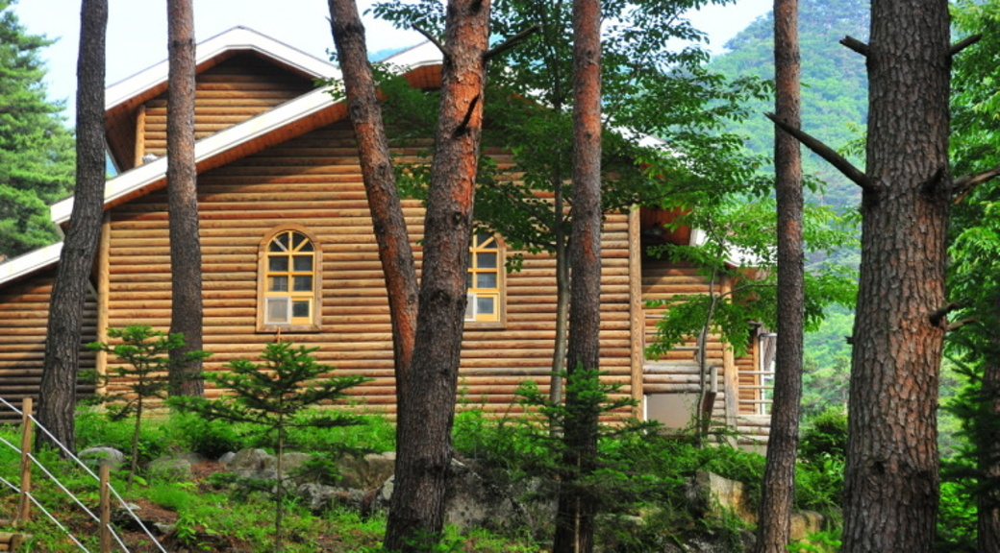
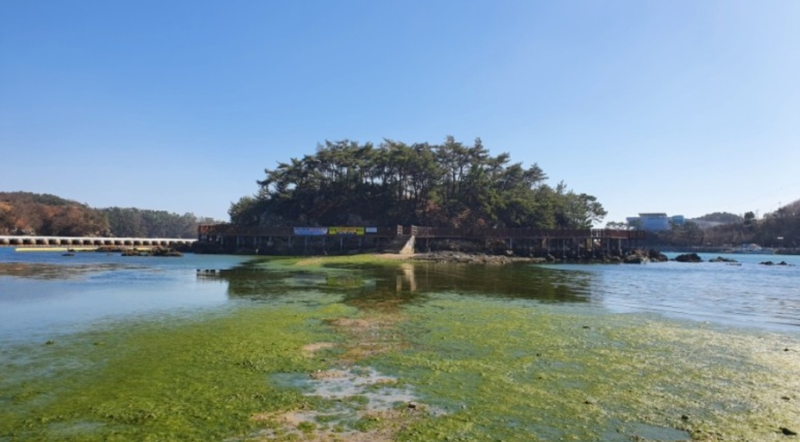
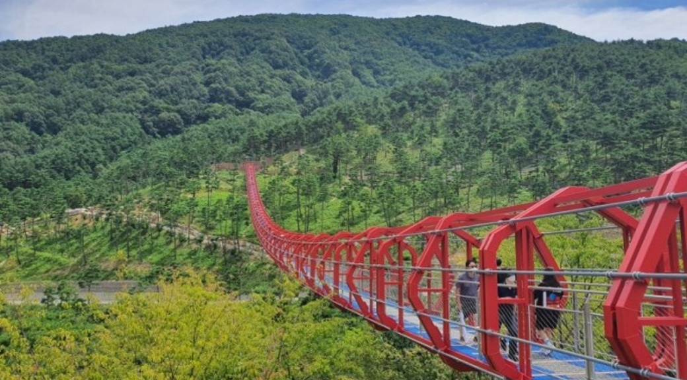

경상북도 영양군
영양군은 신호등을 찾아보기 힘들 만큼 인적이 드문 곳이다.
한국 현대시의 완성이자 근대시의 시초인 조지훈생가가 있는 주실마을에 들어서면 그의 시비를 만날 수 있다.
현존하는 최고 한글 조리서, 음식 디미방이 존재하는 두들마을에 가면 전통주부터 상차림까지 다양한 체험이 가능하다.
검마산자연휴양림은 캠핑장을 비롯한 각종 편의시설을 두루 갖추고 있어 가족단위 관광객이 즐겨 찾는다.
경상북도 영천시
소원을 이루는 돌할매가 있는 영천.
산기슭에 위치한 돌할매 공원은 아기자기한 공원은 아니지만, 소원을 비는 방식이 독특해 꾸준히 인기를 끌고 있다.
가장 많은 부처님을 모시고 있는 사찰인 만불사와 충신의 향을 느낄 수 있는 임고서원도 함께 둘러보면 좋다.
경상남도 고성군
공룡의 역사를 거슬러 볼 수 있는 고성군.
우리나라 최초로 개관한 '공룡 전문 박물관'인 고성 공룡 박물관에 있는 공룡의 역사를 비롯해 상족암 부근 해안 암반에 남아있는 공룡 발자국이 빼놓아서는 안 될 볼거리이다.
옛 돌담이 멋스러운 학동마을은 가볍게 걷기 좋다.
경상남도 진해구
2010년 7월 1일 마산시·창원시·진해시가 통합하여 창원시가 출범하면서 신설된 구이다.
동쪽은 부산광역시 강서구와, 북쪽은 성산구·김해시와 접하고, 서쪽은 마산만을 사이에 두고 마산합포구와, 남쪽은 진해만을 사이에 두고 거제시와 마주한다.
경상남도 산청군
지리산은 산청군을 대표하는 관광지다.
천왕봉 일출은 국가 지정 문화재인 명승으로 지정될 만큼 절경을 이룬다.
세월의 깊이를 간직한 돌담길이 있는 남사예담촌은 경남 대표 전통마을이다.
위태로운 암벽 위에 세워진 절집이 인상적인 정취암과 철쭉으로 유명한 황매산은 가벼운 산행을 하기에 좋다.
가야 시대의 피라미드라고도 불리는 구형왕릉은 경사진 언덕에 층층이 돌이 쌓여진 모습이 인상적이다.
| 열 제목1 | 열 제목2 | 열 제목3 | |
|---|---|---|---|
| 일단 만듬 | 1 | 1 | 1 |
| 일단 만듬 | 1 | 1 | 1 |
| 일단 만듬 | H2O & 42 | 1 | |
| 일단 만듬 | 1 | ||